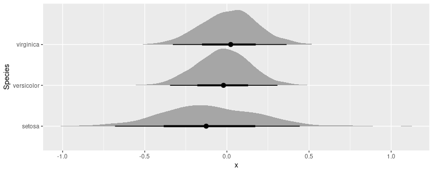

Bootstrap & Simulation
marginaleffects offers an inferences() function to compute
uncertainty estimates using the bootstrap and simulation-based
inference.
WARNING: The inferences() function is experimental. It may be renamed,
the user interface may change, or the functionality may migrate to
arguments in other marginaleffects functions.
Consider a simple model:
library(marginaleffects)
mod <- lm(Sepal.Length ~ Petal.Width * Petal.Length + factor(Species), data = iris)
We will compute uncertainty estimates around the output of
comparisons(), but note that the same approach works with the
predictions() and slopes() functions as well.
Delta method
The default strategy to compute standard errors and confidence intervals is the delta method. This is what we obtain by calling:
avg_comparisons(mod, by = "Species", variables = "Petal.Width")
#>
#> Term Contrast Species Estimate Std. Error z Pr(>|z|) S 2.5 % 97.5 %
#> Petal.Width mean(+1) setosa -0.1103 0.285 -0.387 0.699 0.5 -0.669 0.449
#> Petal.Width mean(+1) versicolor -0.0201 0.160 -0.125 0.900 0.2 -0.334 0.293
#> Petal.Width mean(+1) virginica 0.0216 0.169 0.128 0.898 0.2 -0.309 0.353
#>
#> Columns: term, contrast, Species, estimate, std.error, statistic, p.value, s.value, conf.low, conf.high, predicted_lo, predicted_hi, predicted
#> Type: response
Since this is the default method, we obtain the same results if we add
the inferences() call in the chain:
avg_comparisons(mod, by = "Species", variables = "Petal.Width") |>
inferences(method = "delta")
#>
#> Term Contrast Species Estimate Std. Error z Pr(>|z|) S 2.5 % 97.5 %
#> Petal.Width mean(+1) setosa -0.1103 0.285 -0.387 0.699 0.5 -0.669 0.449
#> Petal.Width mean(+1) versicolor -0.0201 0.160 -0.125 0.900 0.2 -0.334 0.293
#> Petal.Width mean(+1) virginica 0.0216 0.169 0.128 0.898 0.2 -0.309 0.353
#>
#> Columns: term, contrast, Species, estimate, std.error, statistic, p.value, s.value, conf.low, conf.high, predicted_lo, predicted_hi, predicted
#> Type: response
Bootstrap
marginaleffects supports three bootstrap frameworks in R: the
well-established boot package, the newer rsample package, and the
so-called “bayesian bootstrap” in fwb.
boot
avg_comparisons(mod, by = "Species", variables = "Petal.Width") |>
inferences(method = "boot")
#>
#> Term Contrast Species Estimate Std. Error 2.5 % 97.5 %
#> Petal.Width mean(+1) setosa -0.1103 0.269 -0.634 0.416
#> Petal.Width mean(+1) versicolor -0.0201 0.168 -0.346 0.328
#> Petal.Width mean(+1) virginica 0.0216 0.193 -0.364 0.406
#>
#> Columns: term, contrast, Species, estimate, predicted_lo, predicted_hi, predicted, std.error, conf.low, conf.high
#> Type: response
All unknown arguments that we feed to inferences() are pushed forward
to boot::boot():
est <- avg_comparisons(mod, by = "Species", variables = "Petal.Width") |>
inferences(method = "boot", sim = "balanced", R = 500, conf_type = "bca")
est
#>
#> Term Contrast Species Estimate Std. Error 2.5 % 97.5 %
#> Petal.Width mean(+1) setosa -0.1103 0.267 -0.699 0.370
#> Petal.Width mean(+1) versicolor -0.0201 0.168 -0.327 0.356
#> Petal.Width mean(+1) virginica 0.0216 0.187 -0.384 0.381
#>
#> Columns: term, contrast, Species, estimate, predicted_lo, predicted_hi, predicted, std.error, conf.low, conf.high
#> Type: response
We can extract the original boot object from an attribute:
attr(est, "inferences")
#>
#> BALANCED BOOTSTRAP
#>
#>
#> Call:
#> bootstrap_boot(model = model, INF_FUN = INF_FUN, newdata = ..1,
#> vcov = ..2, variables = ..3, type = ..4, by = ..5, conf_level = ..6,
#> cross = ..7, comparison = ..8, transform = ..9, wts = ..10,
#> hypothesis = ..11, eps = ..12)
#>
#>
#> Bootstrap Statistics :
#> original bias std. error
#> t1* -0.11025325 0.0061468984 0.2665458
#> t2* -0.02006005 0.0016721860 0.1681797
#> t3* 0.02158742 -0.0003940501 0.1870078
Or we can extract the individual draws with the posterior_draws()
function:
posterior_draws(est) |> head()
#> drawid draw term contrast Species estimate predicted_lo predicted_hi predicted std.error conf.low conf.high
#> 1 1 -0.21728500 Petal.Width mean(+1) setosa -0.11025325 4.957514 4.845263 4.957514 0.2665458 -0.6991295 0.3696953
#> 2 1 -0.22923339 Petal.Width mean(+1) versicolor -0.02006005 6.327949 6.322072 6.327949 0.1681797 -0.3268743 0.3558137
#> 3 1 -0.23475067 Petal.Width mean(+1) virginica 0.02158742 7.015513 7.051542 7.015513 0.1870078 -0.3843704 0.3809925
#> 4 2 -0.10810333 Petal.Width mean(+1) setosa -0.11025325 4.957514 4.845263 4.957514 0.2665458 -0.6991295 0.3696953
#> 5 2 -0.05337181 Petal.Width mean(+1) versicolor -0.02006005 6.327949 6.322072 6.327949 0.1681797 -0.3268743 0.3558137
#> 6 2 -0.02809907 Petal.Width mean(+1) virginica 0.02158742 7.015513 7.051542 7.015513 0.1870078 -0.3843704 0.3809925
posterior_draws(est, shape = "DxP") |> dim()
#> [1] 500 3
rsample
As before, we can pass arguments to rsample::bootstraps() through
inferences(). For example, for stratified resampling:
est <- avg_comparisons(mod, by = "Species", variables = "Petal.Width") |>
inferences(method = "rsample", R = 100, strata = "Species")
est
#>
#> Term Contrast Species Estimate 2.5 % 97.5 %
#> Petal.Width mean(+1) setosa -0.1103 -0.648 0.514
#> Petal.Width mean(+1) versicolor -0.0201 -0.291 0.309
#> Petal.Width mean(+1) virginica 0.0216 -0.296 0.404
#>
#> Columns: term, contrast, Species, estimate, predicted_lo, predicted_hi, predicted, conf.low, conf.high
#> Type: response
attr(est, "inferences")
#> # Bootstrap sampling using stratification with apparent sample
#> # A tibble: 101 × 3
#> splits id estimates
#> <list> <chr> <list>
#> 1 <split [150/62]> Bootstrap001 <tibble [3 × 7]>
#> 2 <split [150/61]> Bootstrap002 <tibble [3 × 7]>
#> 3 <split [150/55]> Bootstrap003 <tibble [3 × 7]>
#> 4 <split [150/55]> Bootstrap004 <tibble [3 × 7]>
#> 5 <split [150/57]> Bootstrap005 <tibble [3 × 7]>
#> 6 <split [150/48]> Bootstrap006 <tibble [3 × 7]>
#> 7 <split [150/54]> Bootstrap007 <tibble [3 × 7]>
#> 8 <split [150/57]> Bootstrap008 <tibble [3 × 7]>
#> 9 <split [150/58]> Bootstrap009 <tibble [3 × 7]>
#> 10 <split [150/55]> Bootstrap010 <tibble [3 × 7]>
#> # ℹ 91 more rows
Or we can extract the individual draws with the posterior_draws()
function:
posterior_draws(est) |> head()
#> drawid draw term contrast Species estimate predicted_lo predicted_hi predicted conf.low conf.high
#> 1 1 -0.4359138 Petal.Width mean(+1) setosa -0.11025325 4.957514 4.845263 4.957514 -0.6476333 0.5135963
#> 2 1 -0.1202807 Petal.Width mean(+1) versicolor -0.02006005 6.327949 6.322072 6.327949 -0.2907593 0.3086742
#> 3 1 0.0254656 Petal.Width mean(+1) virginica 0.02158742 7.015513 7.051542 7.015513 -0.2958089 0.4042503
#> 4 2 -0.8391650 Petal.Width mean(+1) setosa -0.11025325 4.957514 4.845263 4.957514 -0.6476333 0.5135963
#> 5 2 -0.1395913 Petal.Width mean(+1) versicolor -0.02006005 6.327949 6.322072 6.327949 -0.2907593 0.3086742
#> 6 2 0.1834427 Petal.Width mean(+1) virginica 0.02158742 7.015513 7.051542 7.015513 -0.2958089 0.4042503
posterior_draws(est, shape = "PxD") |> dim()
#> [1] 3 100
Fractional Weighted Bootstrap (aka Bayesian Bootstrap)
The fwb package implements
fractional weighted bootstrap (aka Bayesian bootstrap):
“fwb implements the fractional weighted bootstrap (FWB), also known as the Bayesian bootstrap, following the treatment by Xu et al. (2020). The FWB involves generating sets of weights from a uniform Dirichlet distribution to be used in estimating statistics of interest, which yields a posterior distribution that can be interpreted in the same way the traditional (resampling-based) bootstrap distribution can be.” -Noah Greifer
The inferences() function makes it easy to apply this inference
strategy to marginaleffects objects:
avg_comparisons(mod) |> inferences(method = "fwb")
#>
#> Term Contrast Estimate Std. Error 2.5 % 97.5 %
#> Petal.Length +1 0.8929 0.0776 0.743 1.043
#> Petal.Width +1 -0.0362 0.1548 -0.341 0.278
#> Species versicolor - setosa -1.4629 0.3288 -2.111 -0.819
#> Species virginica - setosa -1.9842 0.3875 -2.716 -1.233
#>
#> Columns: term, contrast, estimate, std.error, conf.low, conf.high
#> Type: response
Simulation-based inference
This simulation-based strategy to compute confidence intervals was described in Krinsky & Robb (1986) and popularized by King, Tomz, Wittenberg (2000). We proceed in 3 steps:
- Draw
Rsets of simulated coefficients from a multivariate normal distribution with mean equal to the original model’s estimated coefficients and variance equal to the model’s variance-covariance matrix (classical, “HC3”, or other). - Use the
Rsets of coefficients to computeRsets of estimands: predictions, comparisons, or slopes. - Take quantiles of the resulting distribution of estimands to obtain a confidence interval and the standard deviation of simulated estimates to estimate the standard error.
Here are a few examples:
library(ggplot2)
library(ggdist)
avg_comparisons(mod, by = "Species", variables = "Petal.Width") |>
inferences(method = "simulation")
#>
#> Term Contrast Species Estimate Std. Error 2.5 % 97.5 %
#> Petal.Width mean(+1) setosa -0.1103 0.283 -0.645 0.410
#> Petal.Width mean(+1) versicolor -0.0201 0.163 -0.357 0.294
#> Petal.Width mean(+1) virginica 0.0216 0.174 -0.325 0.366
#>
#> Columns: term, contrast, Species, estimate, std.error, conf.low, conf.high, predicted_lo, predicted_hi, predicted, tmp_idx
#> Type: response
Since simulation based inference generates R estimates of the
quantities of interest, we can treat them similarly to draws from the
posterior distribution in bayesian models. For example, we can extract
draws using the posterior_draws() function, and plot their
distributions using packages likeggplot2 and ggdist:
avg_comparisons(mod, by = "Species", variables = "Petal.Width") |>
inferences(method = "simulation") |>
posterior_draws("rvar") |>
ggplot(aes(y = Species, xdist = rvar)) +
stat_slabinterval()

Multiple imputation and missing data
The same workflow and the same inferences function can be used to
estimate models with multiple imputation for missing data.